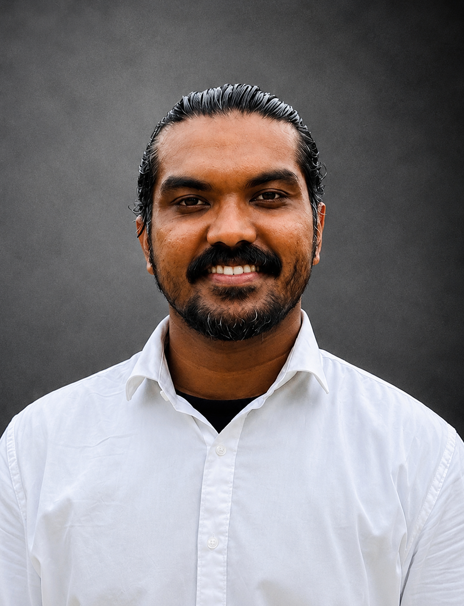

About
Journalism.
Research.

Mohammad Istiaq Jawad (Moon)
Covers stories under the radar.
He is a journalist and a doctoral candidate at Osaka University. His research focuses on refugee–host coexistence and development.
His work moves between journalism and research while keeping the two roles distinct. This portfolio brings together reporting, analysis, photography, video and research-based public communication.
Current
Doctoral candidate, Osaka University
Research
Refugee–host coexistence and development
Journalism
International affairs and underreported issues
Formats
Written · Video · Photography